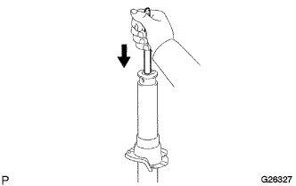

Rear shock absorber W/coil spring (4WD) inspection |
| 1. Shock absorber ASSY RR LH inspection |
Shock Absorba Operation Inspection
Push the shock absorber to the bottom and do it more than four times to stretch it naturally.
|  |
Check the shock absorber.